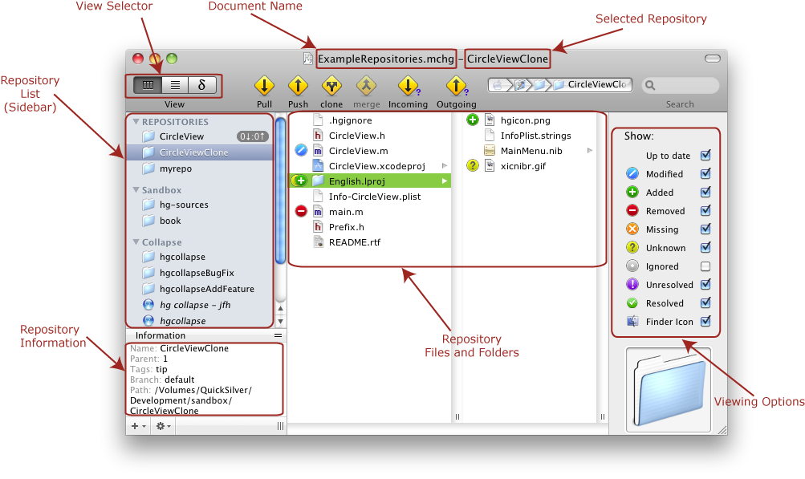

A MacHg document is used to manage a collection of repositories and interact with the repositories. A typical MacHg document window looks like:

Using the Document View Selector you can change the view of the document window. There are three main views of the document.
| Files View | Used to examine and interact with the working copy of the repository. Ie you can work with the current files in the repository and see which files have been modified, newly added, newly removed, or are unknown, missing, etc. with respect to the parent revision. |
| History View | Used to view the history of the repository and branches of the repository. From here you can interact with the changesets in the repository, or update(change) the working copy to a specific revision. |
| Differences View | From the differences view you can compare the state of the repository at one time to another time. |
The Repository List occurs in the (left) sidebar in all three document views: Files, History and Differences. It shows the collection of Mercurial repositories which the current document manages. You can add to, remove from, or configure the repository references in this collection. You can also create, modify, or remove groups. You can rearrange the order of the repository references by dragging and dropping them. Any italicized repository represents a remote repository, ie., it exists on an external server.
This part of the MacHg document window gives, at a glance, such information as the name of the selected repository, the parent revision, and any tags, branches, or labels for the parent revision, and finally the path to the selected repository.
For each option in the list of File Viewing Options, checking/unchecking of its checkbox will show/hide files and folders with the indicated status.